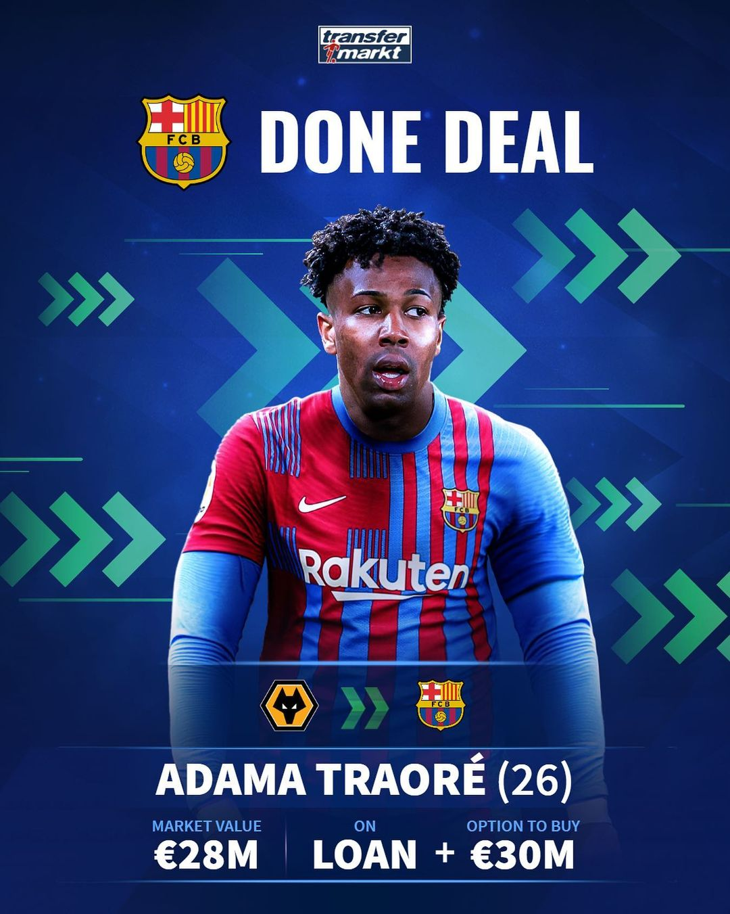

ADAMA TRAORE
Barcelona has signed speedy winger Adama Traore on loan from Premier League side Wolverhampton Wanderers until the end of the season, the LaLiga club announced on Saturday.

ARTHUR CABRAL
With Dušan Vlahović’s €75 million move to Juventus all but done, Fiorentina have already found his replacement. Meet Arthur Cabral, a 23-year-old Brazilian striker currently playing for FC Basel in Switzerland. Many reports have Cabral on the brink of a move for €16 million to Firenze.